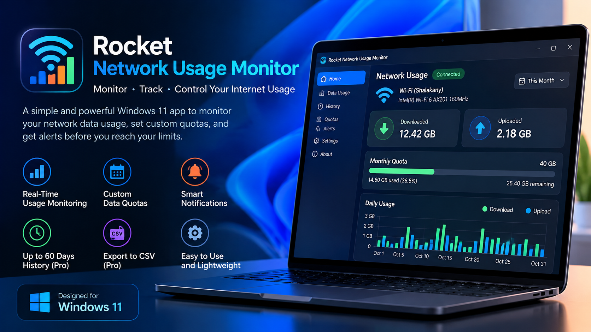

Network usage monitoring
View Windows-reported download and upload usage by network connection profile.
Monitor network data usage, set custom quotas, and get local notifications before you reach your limits. The app is designed to keep usage records and settings on your device.

Product features
View Windows-reported download and upload usage by network connection profile.
Set your own quota amounts, periods, and alert thresholds.
Opt in to Windows notifications when a collection refresh detects a reached quota threshold.
The free history view covers 30 days; Pro unlocks viewing the full 60-day Windows history window.
Export a file to a location you choose and decide how to share it.
Usage records and settings stay in the app's local data storage; no account is required.
Product privacy
Last reviewed against the intended product scope: 2026-10-30.
This policy describes the intended product behavior. Before release, it must be compared with the shipped app, current Microsoft Store requirements, and laws in every market where the app will be offered. It is not legal advice.
Network Usage Monitor reads Windows network connection profile information and Windows-reported usage totals, including bytes received, bytes sent, connection type, profile name, and usage time intervals. The app uses this information to display network usage and calculate quotas selected by the user.
The app also stores user-created settings locally, including quota values, quota periods, alert thresholds, whether quota notifications are enabled, whether the user opted into start-with-Windows, and the Pro appearance preference.
Usage records and settings are stored in the app's local data storage on the device. Closing the main window hides the app in the notification area (system tray); collection continues while the app runs in the tray and stops when the user chooses Exit from the tray menu. The app does not upload this information to a developer-operated server, cloud storage, advertising network, or analytics service. The app does not require an account.
If the user enables quota alerts, the app generates local Windows notifications after a collection refresh detects that a quota threshold has been reached. Notification content does not include network names or usage totals. Windows notification preferences control whether notifications are displayed.
If the user chooses the Pro CSV export feature, the app creates a file at a location chosen by the user. The user controls whether and with whom that exported file is shared.
Microsoft Store processes a Pro purchase and entitlement through Microsoft Store services. The app does not receive or store the user's payment card details.
Users can change or remove their quota and settings, clear locally retained history, and uninstall the app. The free history view covers 30 days; the app can retain up to 60 days locally so monthly quotas remain accurate and delayed Windows estimates can be reconciled. Pro unlocks viewing and exporting the full 60-day Windows history window. Missing collection intervals are shown as gaps and are not represented as zero usage.
Automatic start with Windows is optional. Users can disable it in the app or through Windows startup controls. Light appearance is the default; Pro users can select Dark appearance. The appearance preference is stored locally on the device. The app does not run with administrator privileges.
For privacy questions or support requests about Rocket Network Usage Monitor, contact the publisher at rocketsoftwaresolution@gmail.com.